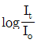
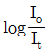
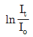
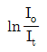

방사선비파괴검사산업기사(구) (2010-09-05 기출문제)
1과목: 방사선투과검사 시험
1. 다음 중 X선 발생장치의 휴지시간(duty cycle)에 가장 큰 영향을 미치는 것은?
- 관전류
- 초점의 크기
- 관전압
- 양극의 냉각속도
(정답률: 알수없음)

2. X선과 γ선에 관한 설명으로 옳지 않은 것은?
- 전자파 방사선의 일종이다.
- 에너지는 침투능력을 결정한다.
- 적외선보다 낮은 주파수를 가진다.
- 가시광선보다 짧은 파장을 가진다.
(정답률: 알수없음)
3. 방사선 투과사진의 촬영에서 투과사진의 콘트라스트를 높이는 방안과 가장 거리가 먼 것은?
- 필름 콘트라스트가 높은 필름을 사용한다.
- 시험체에 대한 조사 범위ㅓ를 좁혀 산란비를 낮춘다.
- 시험체에 대해 선흡수계수가 작은 선원을 사용한다.
- 선원의 크기, 결함의 크기 및 촬영배치와 관련된 기하학적 보정계수가 1에 근접하게 한다.
(정답률: 알수없음)
4. X선과 물질의 상호작용 중 X선 에너지가 물질 내에 흡수되지 않는 것은?
- 광전효과
- 콤프턴효과
- 톰슨효과
- 전자쌍생성
(정답률: 알수없음)
5. 방사선 투과사진의 품질을 결정하는 요인이 아닌 것은?
- 농도(density)
- 콘트라스트(contrast)
- 관용도(latitude)
- 상의 왜곡(distortion)
(정답률: 알수없음)
6. 한감기가 75일이고 30Ci인 방사성동위원소가 50일 후 약 몇 Ci가 되는가?
- 10.3Ci
- 14.6Ci
- 18.9Ci
- 25.0Ci
(정답률: 알수없음)
7. 누설검사(leak testing)의 원리와 가장 가까운 비파괴검사법은?
- 자분탐상시험
- 방사선투과시험
- 침투탐상시험
- 초음파탐상시험
(정답률: 알수없음)
8. 자분탐상시험에서 건식법과 비교한 습식법의 장점은?
- 표면결함 탐지에 우수하다.
- 거친 표면의 검사에 우수하다.
- 고온 부품의 검사에 우수하다.
- 표면직하 결함 검사에 우수하다.
(정답률: 알수없음)
9. 시험체 주변에 압력차를 발생시켜 검사하는 비파괴검사법은?
- 누설검사법
- 자분탐상시험법
- 역전류탐상시험법
- 중성자투과시험법
(정답률: 알수없음)
10. 초음파가 매질 내 입자의 운동방향과 파의 진행방향이 직각일 때의 파동 형태는?
- 판파
- 종파
- 횡파
- 표면파
(정답률: 알수없음)
11. “제품이 주어진 조건으로 규정된 기간 중 요구된 기능을 다할 수 있는 성질”을 뜻하는 비파괴검사 용어는?
- 창조성
- 효율성
- 안전성
- 신뢰성
(정답률: 알수없음)
12. 재료의 내부에 발생하는 결함의 동적인 거동을 평가하는 비파괴시험법은?
- 누설검사
- 음향방출시험
- 초음파탐상시험
- 와전류탐상시험
(정답률: 알수없음)
13. 내부 결함의 종류를 확인할 수 있는 가장 좋은 비파괴검사법은?
- 방사선투과시험
- 초음파탐상시험
- 자분탐상시험
- 침투탐상시험
(정답률: 알수없음)
14. 서브머지드(Submerged) 아크 용접부에서 간헐적인 넓고 흐린 자분모양이 습식법보다 건식법에서 잘 나타났다면 무슨 결함인가?
- 언더컷(Undercut)
- 크레이터 균열(Crater Crack)
- 용입부족(Incomplete Penetration)
- 표면하의 슬래그 혼입(Slag Inclusion)
(정답률: 알수없음)
15. 물 5mL 에 침투제 40mL을 첨가한 경우 물의 함량(vol%)은 약 얼마인가?
- 8.2
- 9.4
- 11.1
- 12.5
(정답률: 알수없음)
16. 완전류탐상시험에서 지시에 영향을 주는 것과 가장 거리가 먼 인자는?
- 시험체의 전도도
- 시험체의 투자율
- 시험체의 탄성계수
- 시험체와 시험 코일간 거리
(정답률: 알수없음)
17. 비파괴검사의 주요 역할과 거리가 먼 것은?
- 결함검출 및 품질을 평가한다.
- 제품개발 및 공정관리에 기여한다.
- 제품의 전기적 성질 측정이 가능하다.
- 제품 보수 및 장비의 교정을 관리한다.
(정답률: 알수없음)
18. 전도체의 얇은 튜브 형태인 시험체를 비접촉법으로 짧은 시간에 많은 양을 검사하기에 적합한 비파괴검사법은?
- 자분탐상시험법
- 방사선투과시험법
- 침투탐상시험법
- 와전류탐상시험법
(정답률: 알수없음)
19. 침투탐상시험의 장점이 아닌 것은?
- 적용이 간단하다.
- 모든 종류의 결함을 검출할 수 있다.
- 원리가 간단하며 상대적으로 이해하기가 쉽다.
- 검사체의 모양, 크기에 대한 제약조건은 거의 없다.
(정답률: 알수없음)
20. 방사선투과시험의 단점에 대한 설명 중 틀린 것은?
- 미세한 표면 균열은 검출되기 어렵다.
- 모든 시험체의 용접부에만 적용할 수 있다.
- 다른 비파괴시험법에 비해 비용이 많이 든다.
- 조사선원의 이동 방향에 수직한 결함은 검출이 어렵다.
(정답률: 알수없음)
2과목: 방사선투과검사 시험
21. 강 용접 이음부의 방사선 투과시험방법(KS B 0845)에 따라 강관의 맞대기 용접 이음부 촬영시 일반적인 계조계의 위치로 옳은 것은?
- 선원쪽 용접 부위
- 선원쪽 중앙 모재 부위
- 필름쪽 용접 부위
- 필름쪽 중앙 모재 부위
(정답률: 알수없음)
22. 시험체에 X선이 흡수되는 정도와 관련한 요인으로 가장 거리가 먼 것은?
- 시험체의 밀도
- 시험체의 두계
- 시험체의 온도
- 시험체의 구성 원자
(정답률: 알수없음)
23. X선관을 20cm 이동시켜 한 시험체를 촬영한 2매의 사진상에 결함의 이동이 2cm이었다. 필름으로부터 약 얼마만한 깊이에 결함이 있는가? (단, 초점-필름간 거리는 100cm이다.)
- 2cm
- 5cm
- 9cm
- 12cm
(정답률: 알수없음)
24. 다음 중 공업용 X선 필름에 포함된 성분이 아닌 것은?
- 브롬화은(AgBr)
- 젤라틴(Gelatine)
- 텅스텐칼슘(CaWO4)
- 폴리에스테르(Polyester)
(정답률: 알수없음)
25. 공업용 X선 발생장치의 관전압이 250kV, 관전류가 5mA 이고, 강판의 두께가 20mm일 때 전방 산란선량률이 가장 작은 산란각은?
- 15°
- 45°
- 60°
- 90°
(정답률: 알수없음)
26. 다음 중 동일한 강도의 방사성동위원소가 각각 γ선 조사 장치에 장전되어 있을 때 촬영조건은 변화시키지 않고 두께 100mm 정도의 두꺼운 강 시험체를 촬영하는데 가장 적절한 선원은?
- Co-60
- Cs-137
- Ir-192
- Tm-170
(정답률: 알수없음)
27. 방사능을 띤 핵연료봉의 비파괴검사에 유효한 검사법은?
- 형광 투시법
- 중성자투과검사법
- 저에너지의 X선 촬영법
- 고강도의 Co-60을 이용한 방사선투과검사법
(정답률: 알수없음)
28. 다음 중 결함 형태가 날카롭기 때문에 결함주위에 집중되는 응력이 커지므로 성장이 가장 쉽게 예상되는 결함의 종류는?
- 기공
- 갈라짐
- 파이프
- 슬래그 혼입
(정답률: 알수없음)
29. 다음 용접균열 중 용접금속부가 아닌 모재 부위에 발생하는 균열의 종류는?
- 종균열(Longitudinal crack)
- 횡균열(Transverse crack)
- 라멜라 티어(Lamella tear)
- 마이크로 피셔(Micro fissure)
(정답률: 알수없음)
30. C-137의 물리적 반감기는 30.2년이고 생물학적 반감기는 7일이라면 유효반감기는 약 얼마인가?
- 21일
- 70일
- 144일
- 471일
(정답률: 알수없음)
31. 인체의 방사선 피폭량을 관리하기 위해 사용되는 선량다량의 SI 단위로 옳은 것은?
- rad
- Bq
- mR
- Sv
(정답률: 알수없음)
32. 방사선동위원소의 방사능이 초기 강도에서 반으로 감소하는 시간인 반감기에 관한 설명으로 옳은 것은?
- 방사능 감쇠는 시간과 무관하다.
- 방사능은 시간에 따라 선형으로 감소한다.
- 방사능은 시간에 따라 지수함수적으로 증가한다.
- 방사능은 시간에 따라 지수함수적으로 감소한다.
(정답률: 알수없음)
33. 필름의 검은 정도를 정량적으로 나타내는 방사선 투과사진의 농도를 바르게 표현한 식은? (단, Io는 필름에 입사된 빛의 강도, It는 필름을 투과한 빛의 강도이다.)




(정답률: 알수없음)
34. 1가 노출로 방사선 투과사진에 나타난 결함 특성을 관찰하여 그 제품에 미치는 영향을 평가하고자 한다. 이 때 할 수 있는 결함의 특성이 아닌 것은?
- 결함의 깊이
- 결함의 크기
- 결함의 위치
- 결함의 모양
(정답률: 알수없음)
35. 방사선 투과검사를 수행할 때 받을 수 있는 방사선 피폭을 최소화하기 위한 기본 원칙에 관한 설명으로 틀린 것은?
- 노출시간은 가능한 한 짧게 한다.
- 선원은 가능한 한 약한 것을 사용한다.
- 선원으로부터의 거리는 가능한 한 멀게 한다.
- 선원과 검사자 사이에 가능한 한 차폐물을 놓는다.
(정답률: 알수없음)
36. 방사선 투과검사시 투과사진상에 나타날 수 있는 인위적 결함의 원인으로 볼 수 없는 것은?
- 눌림 자국
- 정전기 자국
- 망상형 주름
- 슬래그 개재
(정답률: 알수없음)
37. 다음 중 유효선원의 크기가 작아 방사선 투과시험시 확대 촬영에 가장 유리한 것은?
- 50Ci의 Co-60
- 100Ci의 Ir-192
- 400kV의 X선 발생기
- 10MeV의 베타트론
(정답률: 알수없음)
38. 방사선 투과검사시 X선 발생장치와 시험체의 거리를 3m로 하여 관전류 5mA에 4분의 노출시간으로 얻은 사진과 동일한 사진을 얻으려면 거리는 같고, 관전류를 2mA로 할 때 노출시간은 얼마로 하여야 하는가?
- 5분
- 10분
- 20분
- 40분
(정답률: 알수없음)
39. 방사선이 필름에 노출되었을 때 주어진 노출량의 차이에 대한 사진 농도의 차이의 비를 나타내는 필름 자체의 특성을 무엇이라 하는가?
- 필름 입도
- 노출 허용도
- 필름 콘트라스트
- 피사체 콘트라스트
(정답률: 알수없음)
40. 투과사진의 상질을 개선할 정밀시험방법의 일종인 협조사범위 촬영에서 최적 촬영배치란 무엇인가?
- 투과사진의 콘트라스트가 최대치를 나타내도록 시험체-필름간 거리를 적절히 멀리하는 촬영배치
- 투과사진의 콘트라스트가 최소치를 나타내도록 시험체-필름간 거리를 적절히 멀리하는 촬영배치
- 식별한계 콘트라스트가 최대치를 나타내도록 선원-시험체간 거리를 적절히 멀리하는 촬영배치
- 식별한계 콘트라스트가 최소치를 나타내도록 선원-시험체간 거리를 적절히 멀리하는 촬영배치
(정답률: 알수없음)
3과목: 방사선안전관리, 관련규격 및 컴퓨터활용
41. 겉 용접 이음부의 방사선 투과시험방법(KS B 0845)에서 굴함의 종별에 포함되어 있지 않는 것은?
- 언더컷
- 용입 불량
- 갈라짐
- 텅스텐 혼입
(정답률: 알수없음)
42. ASME 규격에 의거 내부 선원법에 의하여 전 원주 용접부를 동시에 촬영할 때 요구되는 최소 투과도계의 개수는?
- 각 필름당 1개
- 2개
- 3개
- 4개
(정답률: 알수없음)
43. 보일러 및 압력용기에 대한 방사선투과검사(ASME Sec.V, Art.2)에 따라 촬영할 때 1개 이상의 투과도계를 사용하여야 하는 기준으로 옳은 것은?
- 필름내의 농도 변화가 투과도계 농도를 기준으로 -10% 또는 +30% 이상일 경우
- 필름내의 농도 변화가 투과도계 농도를 기준으로 -15% 또는 +30% 이상일 경우
- 필름내의 농도 변화가 투과도계 농도를 기준으로 -15% 또는 +25% 이상일 경우
- 필름내의 농도 변화가 투과도계 농도를 기준으로 -10% 또는 +25% 이상일 경우
(정답률: 알수없음)
44. 방사성동위원소등을 사용하고자 하는 자의 행정절차로 옳은 것은?
- 교육과학기술부장관의 허가를 받아야 한다.
- 한국전력공사에 활동주체 승인을 받아야 한다.
- 한국원자력연구원의 허가를 받아야 한다.
- 교육과학기술부장관의 승인을 받아야 한다.
(정답률: 알수없음)
45. 보일러 및 압력용기에 대한 방사선투과시험(ASME Sec. V, Art.2)에 따른 투과검사시 시험 유효범위를 표시하는 위치 표식(location marker)의 배치에 관한 설명으로 옳은 것은?
- 위치표식은 항상 선원쪽 시험체 밑에 놓는다.
- 위치표식은 방사선 노출시 필름 위에만 있어야 한다.
- 평판 맞대기 용접부는 필름과 시험체 표면 사이에 놓는 것이 원칙이다.
- 곡률을 갖는 용접부의 볼록한 면이 선원쪽을 향할 경우 선원쪽 시험체 표면에 놓아야 한다.
(정답률: 알수없음)
46. 공업용 방사선 투과사진 관찰기(KS A 4918)에서 관찰기의 종류와 관찰면 중앙의 휘도와의 관계가 옳은 것은?
- D10형 : 100 cd/m2 이상 2000 cd/m2 미만
- D20형 : 2000 cd/m2 이상 10000 cd/m2 미만
- D30형 : 10000 cd/m2 이상 30000 cd/m2 미만
- D35형 : 25000 cd/m2 이상
(정답률: 알수없음)
47. 주강품의 방사선 투과시험방법(KS D 0227)에 의한 주강품 수축의 결함 길이 측정시 1류의 경우 시험부 살두께에 관계없이 세지 않는 나뭇가지 모양 결함의 최대 면적은 얼마인가?
- 3mm2
- 5mm2
- 7mm2
- 10mm2
(정답률: 알수없음)
48. 어떤 방사성동위원소로부터 2m 떨어진 곳의 선량률이 시간당 8mR이었다. 이 동위원소로부터 4m 떨어진 지점의 선량률은 몇 mR/h 인가?
- 1
- 2
- 4
- 6
(정답률: 알수없음)
49. 강 용접 이음부의 방사선 투과시험방법(KS B 0845)에서 강판의 맞대기이음 용접부 촬영시 모재의 두께에 따른 계조계가 바르게 연결된 것은?
- 모재두께 15mm 초과 25mm 이하 : 20형
- 모재두께 15mm 초과 30mm 이하 : 20형
- 모재두께 20mm 초과 40mm 이하 : 25형
- 모재두께 40mm 초과 50mm 이하 : 25형
(정답률: 알수없음)
50. 보일러 및 압력용기에 대한 방사선투과검사(ASME Sec.V, Art.2)에 따라 18.8mm 두께인 강용접부를 단일벽 관찰로 촬영하였더니 투과도계의 0.89mm 직경인 2T 구멍이 보였다. 이 투과도계의 두께는 약 얼마인가?
- 0.09mm
- 0.18mm
- 0.45mm
- 0.89mm
(정답률: 알수없음)
51. 강 용접 이음부의 방사선 투과시험방법(KS B 0845)에서 강관리 원둘레 용접 이음부에 대한 상질의 종류가 아닌 것은?
- A급
- B급
- P1급
- F급
(정답률: 알수없음)
52. 원자력관계사업자는 최초로 방사선관리구역에 출입하고자 하는 자에 대하여 출입 전에 교육을 실시해야 한다. 신규 방사선 작업종사자의 교육ㆍ훈련시간의 기준으로 옳은 것은?
- 4시간 이상
- 8시간 이상
- 16시간 이상
- 20시간 이상
(정답률: 알수없음)
53. 방사선구역 수시출입자의 연간 등가선량한도가 옳은 것은?
- 손 : 250mSv
- 피부 : 250mSv
- 발 : 250mSv
- 수정체 : 15mSv
(정답률: 알수없음)
54. Co-60 방사선원의 분당 붕괴수가 4.44×1011dpm이면 약 몇 Ci인가?
- 0.5Ci
- 0.6Ci
- 2Ci
- 6Ci
(정답률: 알수없음)
55. 각 용접이음부의 방사선투과 시험방법(KS B 0845)에 따라 제1종 ~ 제4종 결함을 분류할 때 모재의 두께별 시험 시야로 옳은 것은?
- 모재 두께 10mm 이하 : 5×5mm
- 모재 두께 10mm 초과 25mm 이하 : 10×10mm
- 모재 두께 25mm 초과 50mm 이하 : 20×20mm
- 모재 두께 50mm 초과 100mm 이하 : 30×30mm
(정답률: 알수없음)
56. 자체 데이터베이스를 구축하지 않고 다른 검색 엔진을 통해 검색된 결과를 종합하여 보여주는 검색 엔진은?
- 단순 검색엔진
- 키워드 검색엔진
- 메타 검색엔진
- 메뉴 검색엔진
(정답률: 알수없음)
57. 안전한 인터넷 뱅킹의 보안 기술과 거리가 먼 것은?
- 공인인증서
- 보안카드
- 전자서명
- 전자화폐
(정답률: 알수없음)
58. 정보사회에서의 컴퓨터에 대한 설명으로 옳은 것은?
- 숫자, 음성, 도형, 동영상 등 다양한 형태의 데이터를 처리 할 수 있다.
- 비교, 판단, 분류, 검색 등의 업무처리를 동시에 처리 할 수 없다.
- 많은 양의 데이터를 저장할 수 있으나 다시 활용할 때는 시간이 많이 걸린다.
- 정보사회에서는 컴퓨터와 정보 통신의 역할이 미비하다.
(정답률: 알수없음)
59. 업무와 관련된 생산 계획 예측이나 판매 분석, 시장 동향등의 회의나 브리핑 시 발표에 필요한 내용을 작성하고 발표를 편리하게 해주는 패키지 프로그램은?
- 워드프로세서 소프트웨어
- 스프레드시트 소프트웨어
- 프레젠테이션 소프트웨어
- 데이터베이스 관리 소프트웨어
(정답률: 알수없음)
60. 인터넷 응용 서비스에 대한 설명으로 옳은 것은?
- Usenet : 인터넷은 수천 개의 사이트에서 수백만 개의 파일을 제공하고 있다. 이런 파일이나 정보를 찾기 위해 개발된 것이 Usenet서비스이다.
- WAIS : 동일한 관심사를 가진 사람 간의 토론의 장으로 일종의 전자게시판에 해당한다.
- Archie : 특정 데이터베이스 등을 키워드로 고속 검색할 수 있으며, 색인화 된 자료를 찾는데 유용한 서비스이다.
- Gopher : TUI형식의 간단한 메뉴 방식으로 보다 쉽게 사용자가 원하는 정보나 검색 정보를 제공받을 수 있는 서비스이다.
(정답률: 알수없음)
4과목: 금속재료 및 용접일반
61. 분말야금법으로 제조되어 전기재료에 많이 사용되고 있으며, 다음 중 용융점이 가장 높은 금속은?
- W
- Ni
- Al
- Fe
(정답률: 알수없음)
62. 금속의 공통적 특성이 아닌 것은?
- 수은을 제외하면 상온에서 고체이며 결정체이다.
- 열과 전기의 양도체이다.
- 소성변형성이 있어 가공하기 쉽다.
- 이온화하면 음(-)이온이 된다.
(정답률: 알수없음)
63. 다음 중 제품명과 그에 따른 합금의 주성분이 틀린 것은?
- 청동 : Cu + Sn 합금
- 모넬메탈 : Al + Si 합금
- 하이드로날륨 : Al + Mg 합금
- 오스테나이트계 스테인리스강 : Cr + Ni 합금
(정답률: 알수없음)
64. 다음 황동 중 95% Cu-5%Zn으로 구성된 합금은?
- 길딩메탈(Gilding metal)
- 커머셜 브론즈(Commercial bronze)
- 레드브라스(Red brass)
- 로우브라스(Low brass)
(정답률: 알수없음)
65. 표점거리가 112mm, 지름이 14mm인 시험편을 최대하중 4500kgf에서 시편이 절단 되었을 때 늘어난 길이가 20mm 이었다면 연신율은 얼마인가?
- 5.9%
- 10.9%
- 17.9%
- 25.9%
(정답률: 알수없음)
66. 베어링합금 중 화이트메탈에 대한 설명으로 옳은 것은?
- 베빗메탈(babbit metal)은 Pb계 화이트 메탈이다.
- WM1~WM4가 Sn계, WM6~WM10가 Pb계 화이트 메탈이다.
- 루기메탈(lurgi metal)은 Sn계 화이트 메탈이다.
- 반메탈(bahn metal)은 Sn계 화이트 메탈이다.
(정답률: 알수없음)
67. 금속의 결정격자 내에 발생되는 결함의 명칭과 그 결함의 연결이 틀린 것은?
- 점결함 - 원자공공
- 선결함 - 전위
- 면결함 - 치환형 원자
- 체적결함 - 주조결함
(정답률: 알수없음)
68. 압력이 일정한 경우 A, B합금에서 두 상이 공존하는 영역에서의 자유도는?
- 0
- 1
- 2
- 3
(정답률: 알수없음)
69. 극저탄소 마텐자이트를 시효석출에 의하여 강인화시킨 강은?
- 두랄루민
- 마르에이징
- 콘스탄탄
- 하이드로날륨
(정답률: 알수없음)
70. 주철의 접종(inoculation) 처리 목적에 해당되지 않는 것은?
- 칠(Chill)화를 방지한다.
- 격자결함을 증대시켜 강도를 향상시킨다.
- 흑연의 형상을 개량한다.
- 기계적 성질을 향상시킨다.
(정답률: 알수없음)
71. 저항용접에 사용되는 전원의 특징으로 가장 적합한 것은?
- 저전류, 대전압
- 저전류, 저전압
- 대전류, 대전압
- 대전류, 저전압
(정답률: 알수없음)
72. 피복 아크 용접의 용접부에 피트가 생기는 원인과 가장 관계가 적은 것은?
- 모재에 습기가 많거나 기름, 녹, 페인트가 묻었을 때
- 모재 가운데 탄소, 망간 등의 합금원소가 많을 때
- 극성의 연결을 잘못했을 때
- 모재 가운데 황 함유량이 많을 때
(정답률: 알수없음)
73. 피복 아크 용접에서 아크 쏘림을 방지하는 방법이 아닌 것은?
- 직류 용접기를 사용한다.
- 아크 길이를 짧게 한다.
- 접지점을 될 수 있는 대로 용접부에서 멀리 한다.
- 엔드 탭을 사용한다.
(정답률: 알수없음)
74. 동 및 동합금 용접으로 품질상 용접성이 가장 좋은 용접법은?
- CO2가스 아크 용접
- 피복 아크 용접
- 테르밋 용접
- 불활성가스 텅스텐 아크 용접
(정답률: 알수없음)
75. 절단의 종류 중 아크 절단에 속하는 것은?
- 수중 절단
- 분말 절단
- 플라즈마 제트 절단
- 스키핑
(정답률: 알수없음)
76. 용접사의 기량 미숙으로 인해 발생되는 결함과 가장 관계가 적은 것은?
- 오버랩
- 라미네이션
- 슬래그 섞임
- 언더컷
(정답률: 알수없음)
77. 몰리브덴(Mo), 텅스텐(W) 등의 금속재료를 접합시키는데 가장 적당한 용접법은?
- 원자 수소 용접
- 피복 아크 용접
- 스터드 용접
- 전자 빔 용접
(정답률: 알수없음)
78. 직류 아크 용접에 있어서 용접봉을 양극에 모재를 음극으로 한 극성은?
- 역극성
- 정극성
- 용극성
- 비용극성
(정답률: 알수없음)
79. 용접제품의 변형 교정방법이 아닌 것은?
- 피닝법
- 국부 풀림법
- 박판에 대한 점 수축법
- 가열 후 해머링 법
(정답률: 알수없음)
80. 피복 아크 용접에서 아크전압이 20V, 아크전류는 150A, 용접속도를 200cm/min라 할 때 용접 입열량은 몇 Joule/cm 인가?
- 900
- 1200
- 1500
- 2000
(정답률: 알수없음)